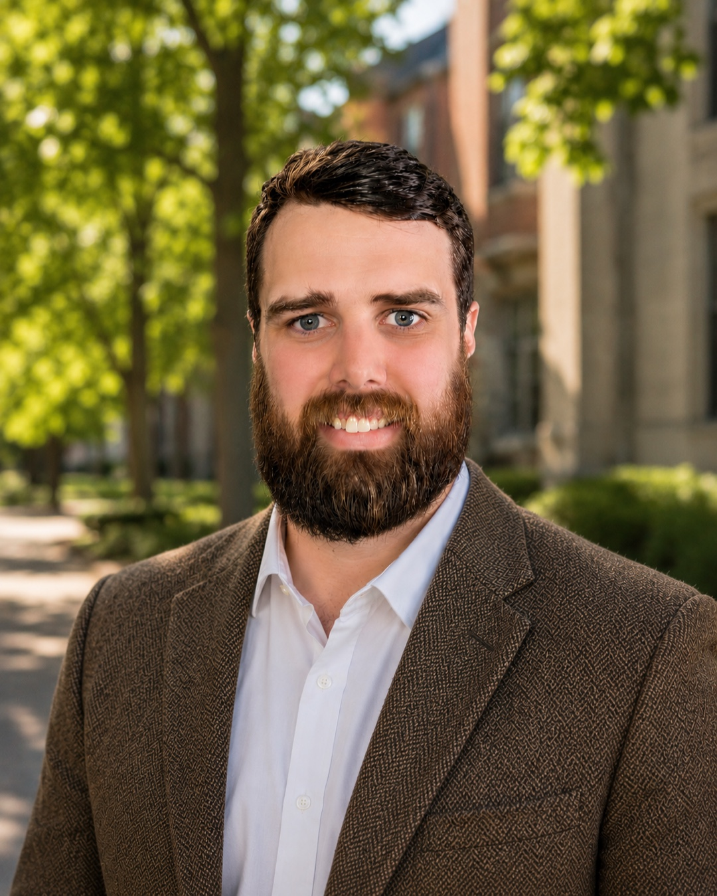

Collin Lucken
Hastings Postdoctoral Scholar in AI & Humanity
Bowdoin College
I am a philosopher of science, and I trained as an engineer before I trained as a philosopher. The fundamental question that organizes my scholarship is: what do we learn by building things? I pursue it in three places. In science, I argue that the instruments and experiments researchers build are discoveries in their own right, not merely applications of theory. In the study of the mind, I build robots and computer simulations to test how thinking depends on the body. In ethics, I ask what we owe one another as engineers and makers. I work with two kinds of tool at once, the careful argument of philosophy and the computational methods of artificial intelligence, so AI for me is both something I use and something I study. As the Hastings Postdoctoral Scholar in AI and Humanity at Bowdoin College, I also help students and faculty decide how, and whether, to bring AI into their own teaching and research.
News
- 2025 Recruited a team of undergraduate student ambassadors as part of the Hastings Initiative for AI and Humanity.
- 2025 Joined Bowdoin College as Hastings Postdoctoral Scholar in AI and Humanity.
- 2025 Article published in Studies in History and Philosophy of Science: “Leveraging participatory sense-making and public engagement with science for AI democratization.”
- 2025 PhD dissertation completed: Engineering Progress in Science, University of Cincinnati.
- 2024 M.Eng. in Robotics and Intelligent Autonomous Systems completed.
Research Areas
Three connected areas, joined by a single question: what do we learn by building things? For details and publications, see the research page.
Scientific Progress
My main work is about how science makes progress. The usual story says science advances by developing better theories. I argue that this leaves out half of what scientists actually achieve: the instruments and devices they build, the models they calibrate, the experiments they design. These constructive acts are ways of producing knowledge in their own right. I call this the operative account of progress, the idea that science advances by expanding what we can do, not only what we can say.
The Mind, the Body, and Machines
My second area concerns the mind and artificial intelligence. I study thinking as something that depends on the body, its tools, and its environments, not just on what happens inside the head, and I test that idea through computer simulations of minimal embodied agents and agentic AI workflows.
The Ethics of Engineering
My third area is the ethics of engineering, and it grows out of my own training as an engineer. I am interested in the particular moral situation of people whose job is to build large-scale systems that affect not just their makers but the public as well. I am developing an account that locates an engineer's responsibilities in their professional identity, in the kind of person the work asks them to become, rather than only in rules or in a tally of costs and benefits.